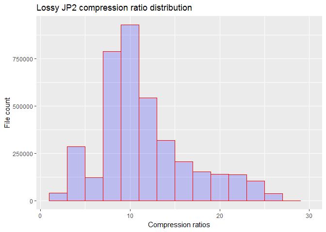

Harvard-Yenching Library JP2 compression analysis
Lossy compressed files
- Total number of lossy-compressed JP2 files analyzed: 3,818,553
- DRS annual storage fees for uncompressed TIFF equivalent files: $147,333 per year.
- DRS annual storage fees for lossy compressed files: $15,663.40 per year.
- Overall realized compression ratio: 9.4:1
- Mean, compression ratio, lossy compressed set: 11.2:1 (0.1 extremities trimmed)
- Annual storage cost savings realized through file compression: $131,669 per year
- Number of files compressed more than 30 times: 168, 0.0044%.
25 files (ids) with lowest compression ratios:
|
10222268 Ratio: 1.8:1 |
10827412 Ratio: 1.8:1 |
11671230 Ratio: 1.9:1 |
11671234 Ratio: 1.9:1 |
11671235 Ratio: 1.9:1 |
|
11671231 Ratio: 1.9:1 |
11671232 Ratio: 1.9:1 |
11671233 Ratio: 1.9:1 |
11391594 Ratio: 2:1 |
11215640 Ratio: 2:1 |
|
14761626 Ratio: 2:1 |
14810317 Ratio: 2:1 |
14794436 Ratio: 2:1 |
10856514 Ratio: 2.1:1 |
11255411 Ratio: 2.1:1 |
|
11255493 Ratio: 2.1:1 |
11506618 Ratio: 2.1:1 |
11506619 Ratio: 2.1:1 |
11506524 Ratio: 2.1:1 |
11671229 Ratio: 2.1:1 |
|
11506898 Ratio: 2.1:1 |
11506989 Ratio: 2.1:1 |
11506990 Ratio: 2.1:1 |
11507075 Ratio: 2.1:1 |
11507723 Ratio: 2.1:1 |
25 files (ids) with highest compression ratios:
|
50770065 Ratio: 45.1:1 |
50770208 Ratio: 44.3:1 |
50780938 Ratio: 42.8:1 |
50770106 Ratio: 42.4:1 |
50770160 Ratio: 42:1 |
|
50770159 Ratio: 41.5:1 |
15484142 Ratio: 41.4:1 |
46530595 Ratio: 41.4:1 |
46609543 Ratio: 41.4:1 |
50770016 Ratio: 41.1:1 |
|
15484198 Ratio: 40.6:1 |
50770158 Ratio: 40.5:1 |
50770102 Ratio: 39.9:1 |
50770207 Ratio: 39.6:1 |
50770061 Ratio: 39.1:1 |
|
50770204 Ratio: 39:1 |
15484143 Ratio: 38.5:1 |
50770154 Ratio: 38.2:1 |
46609545 Ratio: 38:1 |
47093095 Ratio: 38:1 |
|
46553514 Ratio: 37.9:1 |
46759421 Ratio: 37.6:1 |
50770203 Ratio: 37.5:1 |
50770239 Ratio: 37.5:1 |
50770060 Ratio: 37.3:1 |
## Warning: Removed 366 rows containing non-finite values (stat_bin).
Dataset information
- Report ran against DRS-new on: 04/02/2017
- Storage cost: $1.25 / GB / year
- total number of records in set: 3,908,449
- Mime/Type: image/jp2
- DRS file insertion date range: 08/22/2007 to 03/30/2017
- Producer: ****
- MIX bits per sample value: 8
- MIX samples per pixel value: 3
Fields in set:
## file_id_num
## object_huldrsadmin_ownerCode_string_sort
## object_huldrsadmin_billingCode_string
## file_premis_format_string
## file_mets_mimetype_string
## file_huldrsadmin_insertionDate_date
## file_huldrsadmin_role_string_sort
## object_mets_type_string
## object_huldrsadmin_producerWSID_string_sort
## object_huldrsadmin_producer_string_sort
## file_mix_bitsPerSampleValue_num_sort
## file_mix_compressionScheme_string
## file_mix_iccProfile_string
## file_mix_imageHeight_num
## file_mix_imageWidth_num
## file_mix_samplesPerPixel_num
## file_mix_samplingFrequencyUnit_string
## file_mix_xSamplingFrequency_num
## file_mix_ySamplingFrequency_num
## file_premis_size_num
## uncompressedBytes
## CompressionRatio